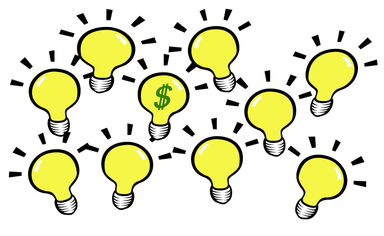
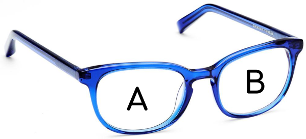
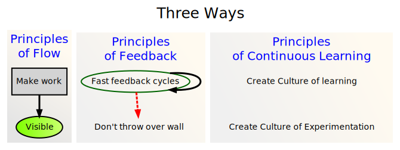
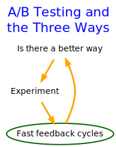

Design Experiment: A primer with emphasis on AB Testing
Gem City Tech ML/AI Meetup
Presented by Evelyn J. Boettcher, DiDacTex, LLC
Dec. 15 2022
Welcome to Gem City Tech ML/AI
We meet every third Thursday and are part of Gem City Tech meetup group
GemCity TECH’s mission is to grow the local industry and the community by providing a centralized destination for technical training, workshops and providing a forum for collaborating.
Currently, support several special interest groups from a variety of technical disciplines.
It cost money to run experiment, train algorithms and implement algorithms. We saw this in March’s meetup where initially one needed to upgrade to Pro Colab. But then we saw that we could reduce sample size and runtime. Which might have allowed us to scrapped by with the free version of Colab.
There are mathematical models you can use to identify what is the number of sample you need to get good results.
In addition, not knowing how to adjust your experiment to meet the risk, can cost you your job and or the company a lot of money.
Recently, Google debuted their version of ChatGPT. This was a high risk demo. It also failed and cost the company $100B in valuation.
You need to know how to adjust your experiments for the risk.
This is where design experimentation comes in. How does one adjust for risk while reducing the cost of running the experiment.
One way to reduce cost and risk is to set-up an A/B Test.
What is A/B Testing
A/B testing is a randomized controlled experiment done in production.
There are two tests: A and B, in which a single variable adjusted (B Test).
This variation, might affect a user’s behavior.
Goal: Increase End User’s Objective
Business: Income increases >> Costs of change
Health Care: Health increases >> Side effect
So why do A/B Testing
Why spend the resources to do tests
Why risk angering your customers with changes?
I got data miners, I do not need tests!
I am a ML Scientist, I don’t need to know the business side
Life is complicated.
Domain knowledge only gets you so far!
Subject-matter experts (SME) from Microsoft, Netflixs etc, find when they implement changes that only a small fraction of their ideas have the planned outcome (Sweet 2022).
Even though we are isolating a single variable, that variable interacts with a million other variables. You simply can not model everything or know everything.

Any change can hurt.
Even tested changes
Though less likely!
Change can help
“If you’re not growing, you’re die-ing”
Gedanken:
Trader Janes has a New Pizza
Say there is a grocer called Trader Janes and it wants to add a new pizza to its line up. However, they need to keep the same number of types it sells a constant. Freezer only holds N pizzas.
They will have to remove one pizza from their lineup to add the new item.
Typical Work flow
Marketing asks a Data Miner to rank popularity of pizza.
The Data Miner finds the pizza that sells the least.
Don’t know, because the store implemented many changes that week!
It’s the week after Thanksgiving and sales always go down that week.
Turns out there was a small group of heavy spenders that love this pizza.
A / B Testing help predict what changes will increase the bottom line.
A / B Testing Limitations
A/B Testing is used to clarify a vision, but does not create vision.
For example, an ophthalmologist quickly gives you a set of two choices; 1 or 2 (2 or 3) that lead to sharpen vision. Their test, like A/B, can not give you vision.
Though without a clarity, a vision has serious limitation.

A/B Testing and the Three ways

A/B Testing is an extension of DevOps.
Feedback will be the results of the A/B Testing.
However
Experimentation happens in production!

A/B Tests
The good, the bad and the ugly
Rewards
Increase companies goals: (make more successful):
Business: Profits
Healthcare: Health
Defence: Situational Awareness
Risks
Test cost time and money
Don’t know what percent of risk is acceptable
Medical and Defence will have higher threshold of risk
Upset customers
Change can make things worse
Mitigation
Have the smallest test possible
5% False Positive
20% False Negative
Typical of non life critical changes
Minimize number of samples
Reducing Costs
Minimal Viable Product
Need to create the smallest, fastest A/B Test that is statistically meaningful.
How do you minimize the number of samples (N)?
Want an N samples that show a 5% false positive and 20% false negative.
\[
N = ?
\]
Use Statistics
Defines minimum number of samples (N) as:
\[
N > 2.48 \left( \frac{\sigma_\Delta}{\Delta} \right)^2
\]
\(\Delta\): How much of a difference is needed to make the change
It cost money to make a change
Increase to bottom line needs to be significant, to accept risk
Example: Trader Jane’s Pizza needs sales to increase by 3%
\(\sigma_\Delta\): estimated by business historical data
\(\sigma_\Delta\) = \(~\sqrt{2 \sigma_{log}^2}\)
\(\sigma_{log}\): How much does sales fluctuate over a given time period.
Important
Unless there is a clear, measurable advantage, no change should occur.
There is no guarantee that change will be effective.
Bias and Harm
In addition, our testing and product should do no harm.
More on this later
Where does 2.48 comes from?
\[
N > 2.48 \left( \frac{\sigma_\Delta}{\Delta} \right)^2
\]
Rules of Thumb: 20 / 5 Rule
Assume there is no difference between A and B
\[
\Delta = 0 \\
\Delta = B - A
\]
False positive
A is better but, you implemented B
incurs an explicit cost
False negative
B is better but, you stuck with A
incurs an implicit cost
\(\alpha\) == False Positive rate
5% => \(z_{score}\) = -1.64
You can assume B is better than A
\(\beta\)== False Negative rate
20% => \(z_{score}\) = 0.84
You can assume A is better than B
From Standard Normal Distribution
Mean is 0
Standard deviation: \(\sigma\)
\(z_{score}\) measures the distance between a point and the mean in units of \(\sigma\)